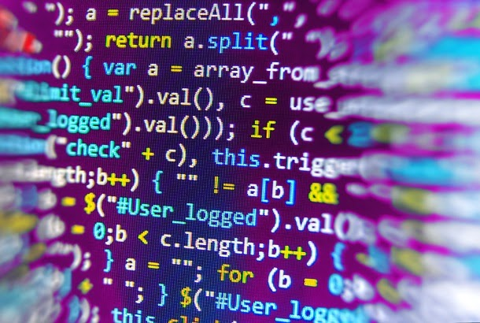

13 de Julio del 2005Nací en el municipio de envigado, en una familia de clase media como hijo único, lo cual me permitió tener acceso a dispositivos electrónicos desde temprana edad y despertar mi interés por la tecnología
2016Hasta este punto, me dediqué a adquirir conocimientos basicos en la primaria, mientras que la mayoría de mis pasatiempos tenían que ver con videojuegos y pasaba mi tiempo libre en ambientes tecnologicos

2021A partir de aquí, en cuanto surgió la pandemia fue donde me empecé a meter de lleno en el mundo de la programación y consideré hacerla parte de mi proyecto de vida
Contáctame